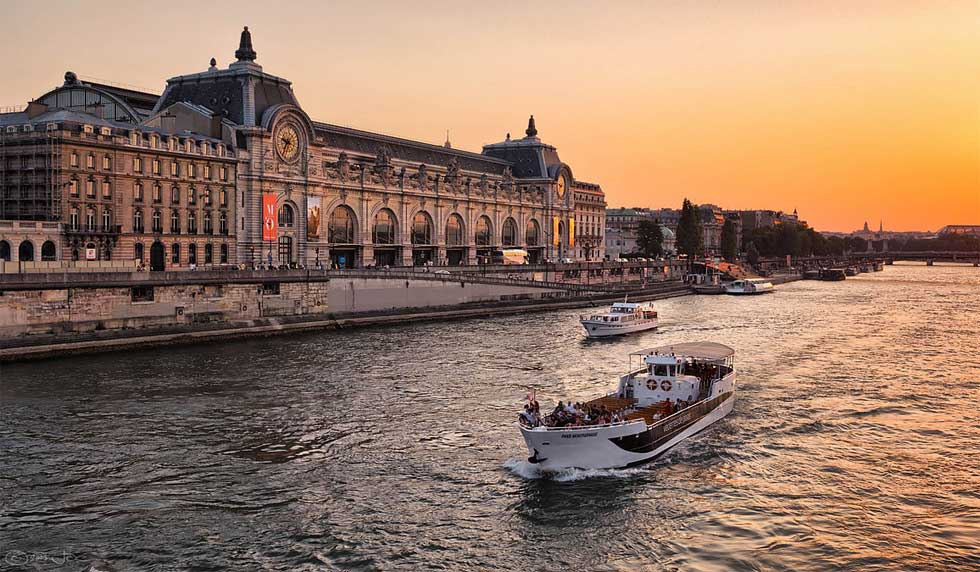
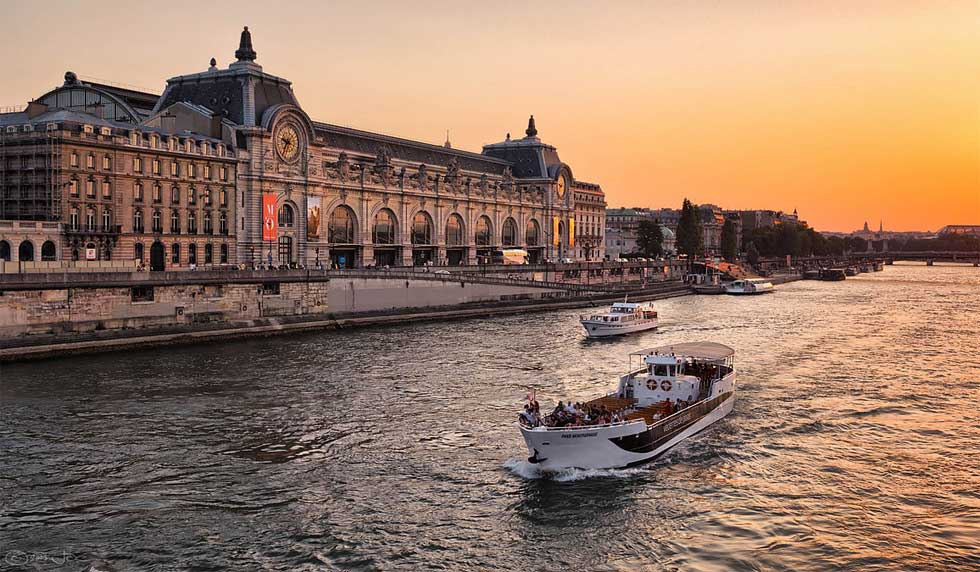

Pontos de interesse
Paris, a capital da França, é conhecida como a "Cidade Luz" por sua importância cultural e intelectual, além de sua bela iluminação noturna. É uma das cidades mais visitadas do mundo e é famosa por sua arquitetura impressionante, arte, história e gastronomia.
Top 5 Restaurantes
- Septime
- L'Oiseau Blanc
- Le Meurice Alain Ducasse
- Arpège
- Restaurant Passerini
Top 5 Monumentos
- Eiffel Tower (Tour Eiffel)
- Notre-Dame Cathedral
- Arc de Triomphe
- Louvre Museum (Musée du Louvre)
- Sacré-Cœur Basilica
Locais a não perder
- Eiffel Tower (Tour Eiffel)
- Notre-Dame Cathedral
- Arc de Triomphe
- Louvre Museum (Musée du Louvre)
- Sacré-Cœur Basilica
Melhor Local para tirar uma foto
Melhor altura para Visitar
| Mês | Ranking (1-10) | Motivo para Visitar |
|---|---|---|
| Janeiro | 5/10 | Mês mais frio, poucas multidões, boas promoções pós-festas. Ideal para passeios em museus e shopping. |
| Fevereiro | 4/10 | Clima ainda frio, mas sem grandes multidões. Carnaval e eventos culturais menores. |
| Março | 7/10 | Fim do inverno, início da primavera. Menos turistas e boas promoções de viagem. |
| Abril | 9/10 | Primavera começando, flores nos jardins, bom clima e menos turistas. |
| Maio | 10/10 | Melhor mês da primavera, com clima perfeito e jardins floridos, sem as multidões do verão. |
| Junho | 8/10 | Clima quente, festivais ao ar livre e o início das férias de verão. |
| Julho | 6/10 | Férias de verão, muitas atrações, mas também multidões e eventos como o Dia da Bastilha. |
| Agosto | 3/10 | Paris esvazia, com parisienses de férias. Menos multidões, mas algumas lojas e restaurantes podem fechar. |
| Setembro | 9/10 | Fim do verão, clima agradável, menos turistas, eventos culturais como a Semana de Moda. |
| Outubro | 8/10 | Outono colorido, clima ameno e ótimo para explorar a cidade sem grandes multidões. |
| Novembro | 6/10 | Clima esfriando, menos turistas, ideal para viagens econômicas e início dos preparativos para o Natal. |
| Dezembro | 7/10 | Mercados de Natal, decoração festiva e atmosfera encantadora, apesar do frio. |